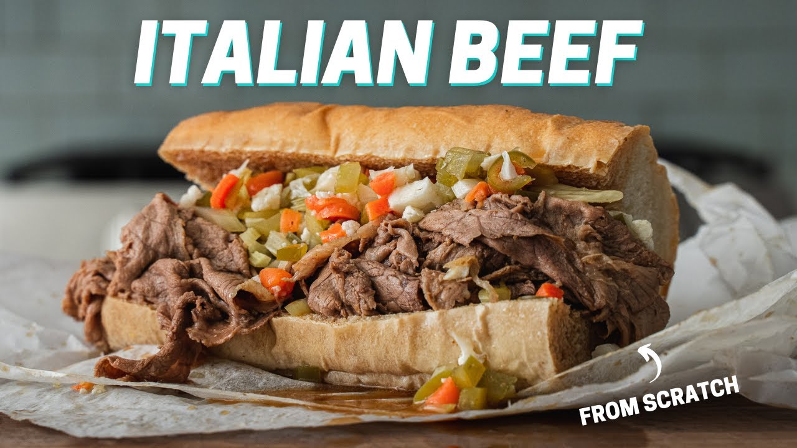

Italian Beef!

A staple to the city of Chicago. An extremely delicious, beefy sandwich dipped in a savory gravy.
This sandwich is often made with a cheese of your choice. It is topped with hot or sweet Peppers, or both! The sandwich is then either served dry, dipped or wet all on a bread roll or "gravy bread".
How I order:
Mozzarella cheese, hot peppers and dipped or sometimes wet
Ingredients
- Beef Roast
- salt
- black pepper
- 1 package Italian dressing mix
- 2 cups low sodium beef broth
- 1 jar of peppers of your choice like Giardiniera peppers
- Turano rolls
- Cheese of your choice
Steps and Instructions:
Ditch everything you know about Italian Beefs and head to Chicago for the best Italian Beef sandwiches!!